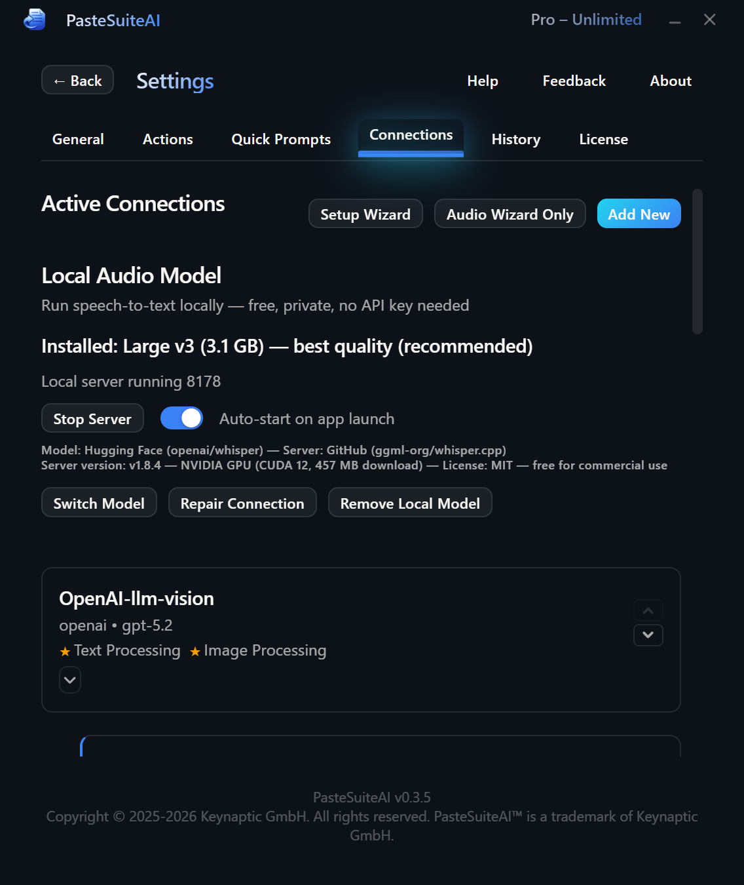
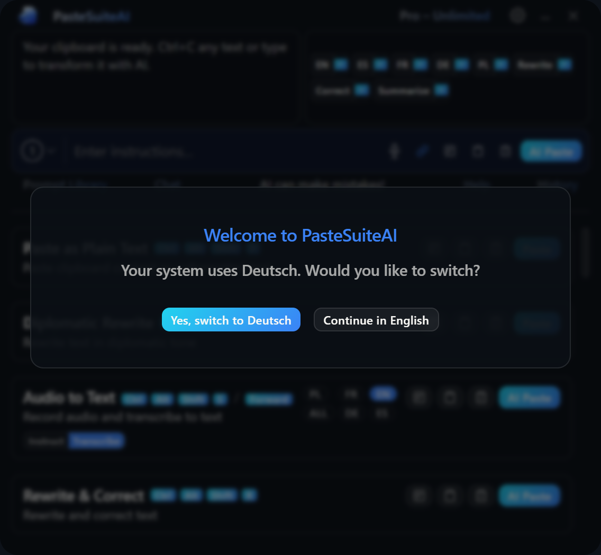

Connections
Configure AI providers, API keys, models, and capabilities
Connections tell PasteSuiteAI how to reach AI providers. Each connection bundles a provider, credentials, and a model into a single entry. You can add up to 50 connections and assign different ones for different tasks — for example, one connection for text generation and a separate one for speech-to-text transcription.

Overview
When you run an action, PasteSuiteAI routes the request to the correct connection based on the action's capability requirement and which connection is marked as the default for that capability. You can override this routing on a per-action basis or for the PromptBar specifically.
Connections are managed in Settings > Connections. Changes take effect immediately — no restart required.
Supported Providers
The following provider types are available out of the box. New providers appear automatically in the provider dropdown when they are added — no option lists are hardcoded.
| Provider | Description | Typical Use |
|---|---|---|
| OpenAI-Compatible | Works with any API that follows the OpenAI chat completions format: OpenAI, Together.ai, Ollama, LM Studio, Mistral, Groq, and more. | LLM, Vision, STT |
| Anthropic | Native Claude API support (claude-3-5-sonnet, claude-opus-4-6, etc.). | LLM, Vision |
| Azure OpenAI | Enterprise Azure endpoints with optional OAuth2 client credentials authentication. | LLM, Vision, STT |
| Google AI | Gemini models via the Google AI Generative Language API. | LLM, Vision |
| Custom API | Build multi-step HTTP pipelines with template variables, conditional blocks, loops, and JSONPath extraction. Useful for internal APIs or chained workflows. | Advanced |
http://localhost:11434/v1).
Capabilities
Each connection declares which AI tasks it can perform. PasteSuiteAI uses these declarations to route requests to the right connection automatically.
| Capability | Description |
|---|---|
| LLM | Text generation and transformation. Required for AI actions that rewrite, summarize, or translate text. |
| STT | Speech-to-text transcription. Required for recording actions. |
| Vision | Image understanding. Allows actions to pass images alongside text prompts. |
The star (★) next to a capability marks the default connection for that capability. When an action needs LLM and no override is set, the starred LLM connection is used. Click the star on any connection card to change the default.
Connection List
Open Settings > Connections to see all your connections. Each card shows the connection name, provider, model, and its declared capabilities.
Use the buttons on each card to manage connections:
| Element | Type | Description |
|---|---|---|
| Edit | Button | Opens the connection editor for this connection. |
| Delete | Button | Removes the connection (and any child connections) after confirmation. Cannot be undone. |
| Move Up / Move Down | Buttons | Reorders the connection in the list. Order affects tie-breaking when multiple connections share a capability. |
| LLM ★ / STT ★ / Vision ★ | Default Star Buttons | Marks this connection as the default for the corresponding capability. Clicking a filled star removes the default (only if another connection also supports that capability). |
Below the connection list you will find two additional buttons:
| Element | Description |
|---|---|
| Relaunch Setup Wizard | Re-runs the first-time setup wizard to add or reconfigure a primary LLM connection. |
| Relaunch Audio Wizard | Re-runs the audio setup wizard to add or reconfigure a speech-to-text connection. |
Connection Editor
Click Edit on an existing connection or select a provider from the Add Connection dropdown to open the connection editor. Changes are auto-saved as you fill in fields — you do not need to click Save after each field.

Basic Settings
| Element | Type | Description |
|---|---|---|
| Provider | Dropdown | Selects the AI provider. Changing the provider resets the model, auth method, and endpoint fields. |
| Model ID | Text Input | The model identifier to use (e.g., gpt-4o, claude-opus-4-6). Leave blank to use the provider's recommended default. A suggestions dropdown appears as you type if the provider has a curated model list. |
| Refresh Models | Button | Fetches the live model list from the provider's API and updates the suggestions dropdown. |
| API Format | Dropdown | Selects the API format when a provider supports multiple formats (e.g., standard chat completions vs. Responses API). Only shown for applicable providers. |
Authentication
All secrets are stored exclusively in your OS secure credential store. They are never written to disk in plaintext and are never logged.
| Element | Type | Description |
|---|---|---|
| Auth Method | Dropdown | Choose API Key, OAuth2 (client credentials flow), or None for providers that require no authentication (e.g., a local Ollama instance). |
| API Key | Password Input | Your provider API key. Displayed as a masked field. A Help link opens the provider's key documentation page. Only visible when Auth Method is API Key. |
| Token URL | Text Input | OAuth2 token endpoint URL (e.g., an Azure AD token endpoint). Only visible when Auth Method is OAuth2. |
| Client ID | Text Input | OAuth2 client identifier. Only visible when Auth Method is OAuth2. |
| Client Secret | Password Input | OAuth2 client secret. Stored in the OS keychain. Only visible when Auth Method is OAuth2. |
| App Key | Password Input | Optional secondary key for certain OAuth2 providers (e.g., an Azure Cognitive Services subscription key). Stored in the OS keychain. |
Endpoint URL
The Endpoint URL field sets a custom base URL for the provider API. This is required for self-hosted models, private cloud deployments, or API proxies. For standard cloud providers the field is pre-filled with the correct default and usually does not need to be changed.
System Prompts
Each connection can carry its own system prompts that are sent to the model alongside the action's instruction and user input. See Actions for how all prompt components are assembled.
| Element | Type | Description |
|---|---|---|
| Mode Toggle (Instruct / Transcribe) | Toggle | Switches which system prompt you are currently editing: the regular Instruct prompt or the Transcribe prompt used for STT actions. |
| System Prompt (Instruct) | Textarea | The system prompt sent for regular AI text actions. Defines the model's persona and general behaviour. |
| System Prompt (Transcribe) | Textarea | The system prompt sent when this connection is used for transcription actions. |
| PromptBar System Prompt | Textarea | The system prompt used when this connection handles PromptBar AI Paste. Defaults to a shorter, conversational prompt optimised for inline use. |
| Transcription Hint | Textarea | Extra hint text passed to the STT provider to improve transcription accuracy (e.g., domain-specific terminology, proper nouns, or spelling preferences). |
| Reset Prompt | Button | Restores the currently visible system prompt field to the application default text. |
| Prompt Library | Link | Opens the Prompt Library so you can browse and copy a saved prompt into the system prompt field. |
Capabilities
Toggle switches enable or disable each capability (LLM, STT, Vision) for this connection. The default star buttons (one per capability) mark this connection as the primary default for that capability.
Custom Fields
Custom fields let you pass additional headers or query parameters to the provider API. This is useful for providers that require extra authentication headers, API versioning parameters, or custom routing keys.
| Element | Type | Description |
|---|---|---|
| Name | Text Input | The header or query parameter name (e.g., api-version or x-custom-header). |
| Value | Text Input | The value. If Is Secret is checked, the value is stored in the OS keychain and masked in the UI. |
| Transport | Dropdown | Whether to send the field as an HTTP header or a URL query parameter. |
| Is Secret | Checkbox | Marks the value as a secret. Secrets are stored in the OS keychain and never written to config files in plaintext. |
| Remove | Button | Deletes this custom field row. |
| Add Field | Button | Adds a new custom field row. Maximum 20 custom fields per connection. |
Child Connections
Child connections inherit authentication from their parent and are deleted automatically when the parent is deleted. They are typically used to pair a primary LLM connection with a dedicated STT connection from the same provider, sharing the same API key without re-entering it.
Preset buttons create common child configurations in one click (e.g., "Audio Recommended" creates a child STT connection with optimal audio settings). Grandchild connections are not supported.
Test Connection
Use the Test Connection button to verify that the connection is correctly configured before using it in an action.
| Element | Type | Description |
|---|---|---|
| Test Message | Text Input | Optional message sent to the model for the test call. Defaults to a generic short prompt if left blank. |
| Test Connection | Button | Sends a real API request and reports whether it succeeded. On failure, shows the error returned by the provider. |
Token Usage
The Token Usage section shows cumulative token statistics for this connection: total input tokens, total output tokens, and total request count. Statistics persist across restarts.
| Element | Type | Description |
|---|---|---|
| Token Usage Display | Read-only | Shows lifetime input tokens, output tokens, and request count for this connection. |
| Reset Stats | Button | Clears the token usage counters for this connection. Cannot be undone. |
Done and Cancel
| Element | Type | Description |
|---|---|---|
| Done | Button | Saves any pending changes (including unsaved secrets) and closes the editor, returning to the connection list. |
| Cancel | Button | For new connections: deletes the in-progress connection entirely. For existing connections: reverts all fields to the state they were in when you clicked Edit. |
Custom API Editor
When the selected provider is Custom API, the editor reveals a full HTTP pipeline builder below the standard connection fields. This lets you build multi-step workflows that call arbitrary HTTP endpoints and chain their outputs.
Steps
Each Custom API pipeline consists of one or more HTTP steps executed in sequence. You can add up to 10 steps. Extracted variables from one step are available as template inputs in all subsequent steps.
| Element | Type | Description |
|---|---|---|
| Step Name | Text Input | A label for this step, shown in debug output and error messages. |
| HTTP Method | Select | GET, POST, PUT, PATCH, or DELETE. |
| URL | Text Input | The request URL. Supports template variables using {{variable}} syntax. |
| Auth Type | Select | Authentication method for this step: None, Bearer, Basic, or API Key. |
| Auth Credential | Text Input | The credential value (token, password, or key value). Supports template variables. |
| Auth Param | Text Input | Optional secondary auth parameter: username for Basic auth, or header name for API Key auth. |
| Headers | Key/Value Rows | Additional HTTP request headers. Each row has a name field and a value field. Both support template variables. |
| Body | Textarea | The request body (JSON, XML, or plain text). Supports template variables and conditional blocks using {{#if var}}...{{/if}} syntax. Built-in variables has_image and has_audio enable conditional multimodal sections. |
| Stream Path | Text Input | JSONPath expression to extract streamed content from Server-Sent Events (SSE) responses. Leave blank for non-streamed JSON responses. |
| Extraction Rows | Rows | Extract named variables from the response using JSONPath. Each row defines a variable name, a source (response body or a specific header), and a JSONPath expression. Extracted variables are available in subsequent steps. |
| On Error | Select | What to do if this step fails: Stop (abort the pipeline and return an error), Continue (proceed with an empty result for this step), or Skip (skip remaining steps and return what has been gathered so far). |
| Move Up / Move Down | Buttons | Reorders this step within the pipeline. |
| Remove | Button | Deletes this step from the pipeline. |
Advanced Step Options
Expand the Advanced section on any step to access timeout, condition, and loop controls:
| Element | Type | Description |
|---|---|---|
| Timeout (seconds) | Number Input | Per-step HTTP timeout in seconds. Overrides the connection-level default timeout. |
| Condition | Text Input | A template expression evaluated before the step runs. If the result is falsy (empty string, "false", "0", or "null"), the step is skipped. |
| Enable Loop | Toggle | Repeats this step in a loop. Configure max iterations, a break condition, and how to accumulate results across iterations. |
| Max Iterations | Number Input | Maximum number of loop repetitions. Subject to a hard application cap. |
| Break When | Text Input | Template expression evaluated after each iteration. When the result is truthy, the loop stops before the next iteration. |
| Result Mode | Select | How loop iteration outputs are combined: Last (use only the final iteration's output), Concat (join all outputs as a single string), or Array (collect all outputs as a JSON array). |
Variables
Variables parameterise your templates. Each variable has a name, a source, a default value, and an optional description. Built-in variables are provided automatically by the pipeline at runtime and include input_text, has_image, has_audio, and others.
| Element | Type | Description |
|---|---|---|
| Variable Name | Text Input | The key referenced in templates as {{name}}. |
| Source | Select | Config (a static value stored in the config file), Vault (a secret stored in the OS keychain), or Builtin (a value provided by the pipeline at runtime). |
| Default Value | Text Input | Fallback value used when the runtime does not supply a value for this variable. |
| Description | Text Input | Human-readable description shown in the debug panel. |
| Remove | Button | Removes this variable definition. |
| Add Variable | Button | Adds a new variable row. |
Result Path and Pipeline Controls
| Element | Type | Description |
|---|---|---|
| Result Path | Text Input | JSONPath expression applied to the final step's response to extract the output text that will be used by the action (e.g., $.choices[0].message.content). |
| Add Step | Button | Appends a new HTTP step to the end of the pipeline. |
| Import Config | Button | Loads a complete pipeline configuration from a YAML or JSON file, replacing the current configuration. |
| Export Config | Button | Saves the current pipeline configuration to a YAML or JSON file for backup or sharing. |
| Browse Templates | Button | Opens the template gallery of pre-built pipeline configurations. Click Use Template on any entry to import it as your starting point. |
Debug Mode
The debug panel lets you run the pipeline with test variable values without affecting real input data or triggering any action side-effects. Enter test key/value pairs, then click Debug Run. The output shows each step's request details, raw response, and extracted variables so you can diagnose template or extraction issues.
| Element | Type | Description |
|---|---|---|
| Debug Variable Rows | Key/Value Inputs | Test values for template variables. Add or remove rows as needed to preview how the request will look with sample data. |
| Debug Run | Button | Executes the pipeline with the supplied test variables and displays per-step debug results. |
Related Topics
- Actions — How actions use connections for AI routing
- Speech to Text — STT connection setup and recording actions
- Prompt Library — Managing and reusing system prompts
- PromptBar — Per-connection LLM override for PromptBar
- Getting Started — First-time setup guide
- Result Overlay — Displaying action output in an overlay
- Licensing — Free tier limits and license keys